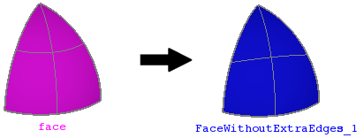

cfdmsh 4.0 documentation
cfdmsh 4.0 documentation cfdmsh 4.0 documentation


Removes zero-length edges in a face.
This function gets the input face normal and extrudes it following this normal, so as to have a solid. Then the geompy.RemoveExtraEdges function is used on this solid and the face matching the source face is extracted.
This function is useful to clean surfaces of revolution touching their own revolution axis.
def RemoveFaceExtraEdges( face = None, tol = 1e-7, add = True, infa = False ):

| Name | Description | Type | GUI selection [?] | Selection by name [?] | Recursive [?] | Default value |
|---|---|---|---|---|---|---|
| face | The face from which to remove extra edges. | Face | yes | yes | yes | None |
| tol | See here. | Float | - | - | - | 1e-7 |
| add | See here. | Boolean | - | - | - | True |
| infa | See here. | Boolean | - | - | - | False |
| dim Value [?] | single Value [?] | Type | Number | Name |
|---|---|---|---|---|
| - | - | Face | 1 | "FaceWithoutExtraEdges" |
from cfdmsh import * # To adapt to the cfdmsh installation method
vertex1 = geompy.MakeVertex(0, 0, 0)
vertex2 = geompy.MakeVertex(0, -20, 0)
vertex3 = geompy.MakeVertex(0, 0, 30)
arc = geompy.MakeArcOfEllipse(vertex1, vertex2, vertex3)
vector = geompy.MakeVectorDXDYDZ(0, 0, 30)
revolution = geompy.MakeRevolution(arc, vector, 90)
AddToStudy(revolution, "revolution")
face_without_extra_edge = RemoveFaceExtraEdges(revolution)
-
cfdmsh 4.0 documentation
tougeron-cfd.com © 2016